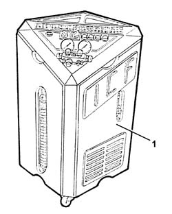
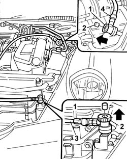
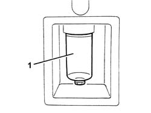

0010T84 AIR CONDITIONING system COOLANT - Dry and repressurize
- Path
- Procedures > 00 MAINTENANCE > 0010 NEW UNITS AND MAINTENANCE > 0010T vehicle oil and fluids > 0010T84 AIR CONDITIONING system COOLANT - Dry and repressurize
- Kind
- repair procedure (removal / refitting; the operation number is the code)
- Applies to
- all engines; all production periods
- Interactive page
- https://sloeber94.github.io/elrnDB-lThss/en/#/500945
Applies to: all engines; all production periods
Applies to: all engines; all production periods
1. Use the special draining and repressurizing equipment.

Applies to: all engines; all production periods
- Let the engine run with the air conditioning on for 10 - 15 minutes.
1. Undo the repressurizing valve caps.
2. Before fitting the connectors on the needle valves, move the knurled ring nut upwards.
3. Connect the high pressure connecting pipe to the corresponding red coloured rapid attachment valve.
4. Connect the low pressure connecting pipe to the corresponding blue coloured rapid attachment valve.

Applies to: all engines; all production periods
- Start the procedure for draining the refrigerant fluid, following the instructions in the equipment manual.
1. Whilst draining the system the compressor fluid that comes out collects in a special container.

Applies to: engines: 2.0 TB, 2.4 20V, 2.4 JTD 10V, 2.4 JTD 20V; all production periods
- Refill the system with exactly the same amount of fluid indicated on the container.
 | Description | Qty. | Component | Type | Classification |
|---|---|---|---|---|---|
. | 140 ± 10 cm³ | AIR CONDITIONING SYSTEM | Oil | SP 10 |
Applies to: engines: 3.0 V6; all production periods
- Refill the system with exactly the same amount of fluid indicated on the container.
| Description | Qty. | Component | Type | Classification |
|---|---|---|---|---|---|
. | 140 ± 10 cm³ | AIR CONDITIONING SYSTEM | Oil | SP 10 |
Applies to: engines: 3.0 V6; all production periods
- Refill the system with exactly the same amount of fluid indicated on the container.
| Description | Qty. | Component | Type | Classification |
|---|---|---|---|---|---|
. | 135 cm³ | AIR CONDITIONING SYSTEM | Oil | SP 10 |
Applies to: all engines; all production periods
- If some of the components are being replaced, the following amount of oil must be added for each of the replaced components:
- Drier filter: 15 cm3
- Pipes: 5 cm3/m
- Evaporator: 40 cm3
- Condenser: 40 cm3
- If there are accidental breaks that cause the "rapid" draining of the system (in less than 5 minutes) then the exact amount of fluid that comes out cannot be determined because the high pressure may cause seepage. Integrare con una quantità indicativa di olio di 75 cm³.
- Start the procedure for repressurizing the refrigerant fluid, following the instructions in the equipment manual.
Applies to: engines: 3.0 V6, 3.2 V6; all production periods
- Add the recommended quantity of refrigerant fluid.
| Description | Qty. | Component | Type | Classification |
|---|---|---|---|---|---|
. | 730g | AIR CONDITIONING CIRCUIT | Fluid | R134a |
Applies to: engines: 2.0 TB, 2.4 20V, 2.4 JTD 10V, 2.4 JTD 20V; all production periods
- Add the recommended quantity of refrigerant fluid.
| Description | Qty. | Component | Type | Classification |
|---|---|---|---|---|---|
. | 650 g | AIR CONDITIONING CIRCUIT | Fluid | R134a |
Applies to: engines: 3.0 V6; all production periods
- Add the recommended quantity of refrigerant fluid.
| Description | Qty. | Component | Type | Classification |
|---|---|---|---|---|---|
. | 650 g | AIR CONDITIONING CIRCUIT | Fluid | R134a |
- In the case of damage to the compressor or other system components or following prolonged exposure of the pipes to the air (more than 6 hours) the WASHING procedure must be carried out as follows.
- Clean the pipes connected to the compressor using a jet of air.
- Connect the (drained) system to the repressurizing equipment.
- Introduce the recommended quantity of refrigerant fluid at the high pressure side.
- Collect the refrigerant fluid at the low pressure side.
- Repeat the introduction and collection of fluid.
- Proceed with draining and repressurizing the system as illustrated previously.
Applies to: engines: 2.0 TB, 2.4 20V, 2.4 JTD 10V, 2.4 JTD 20V; all production periods
- Refill the system with exactly the same amount of fluid indicated on the container.
| Description | Qty. | Component | Type | Classification |
|---|---|---|---|---|---|
. | 140 ± 10 cm³ | AIR CONDITIONING SYSTEM | Oil | SP 10 |
Applies to: engines: 3.0 V6, 3.2 V6; all production periods
- Refill the system with exactly the same amount of fluid indicated on the container.
| Description | Qty. | Component | Type | Classification |
|---|---|---|---|---|---|
. | 140 ± 10 cm³ | AIR CONDITIONING SYSTEM | Oil | SP 10 |
Applies to: engines: 3.0 V6; all production periods
- Refill the system with the recommended amount of oil.
| Description | Qty. | Component | Type | Classification |
|---|---|---|---|---|---|
. | 135 cm³ | AIR CONDITIONING SYSTEM | Oil | SP 10 |
Topics that link to this page (6)
- 1004B18 POWER UNIT with manual gearbox, with front suspension subframe - R.R.
- 1008A46 Power unit RIGID MOUNT - TIMING side - R&R
- 1020D11 Crankshaft oil seal FRONT COVER - R.R. Replace gasket with timing belt removed - Includes cleaning matching surfaces and applying sealant
- 1020D12 Crankshaft oil seal FRONT COVER - R.R. and Replace seals
- 5040A10 Air conditioning coolant circuit - Drying and Repressurizing
- 5040A20 Air conditioning COMPRESSOR - R.R. - Includes fluid level check and top up if necessary